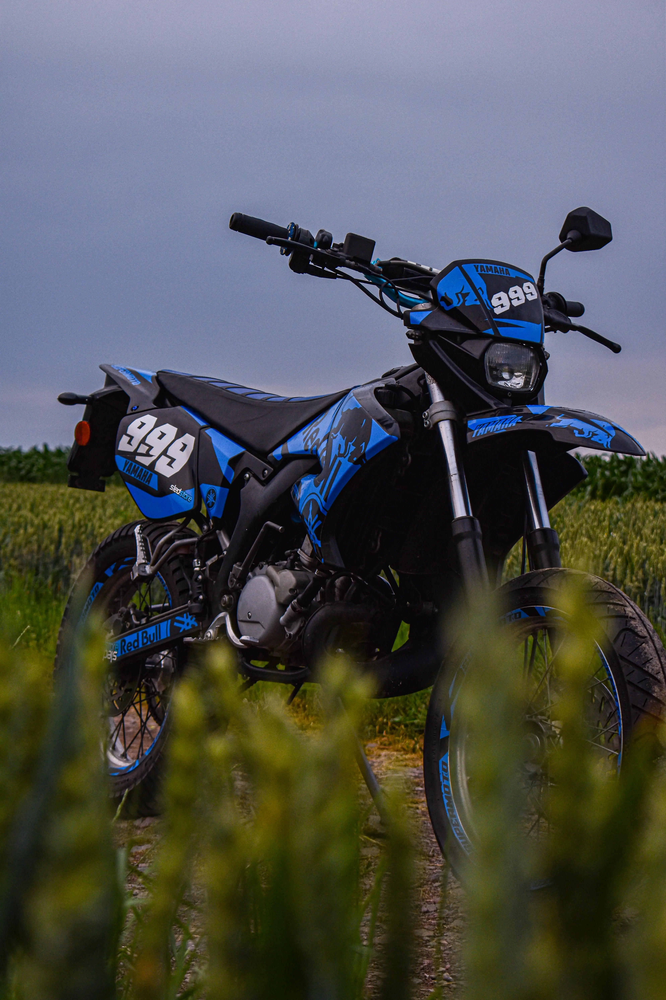
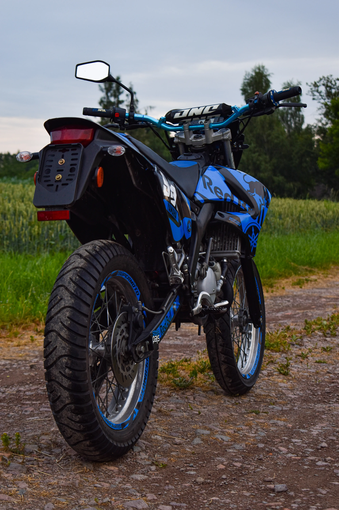
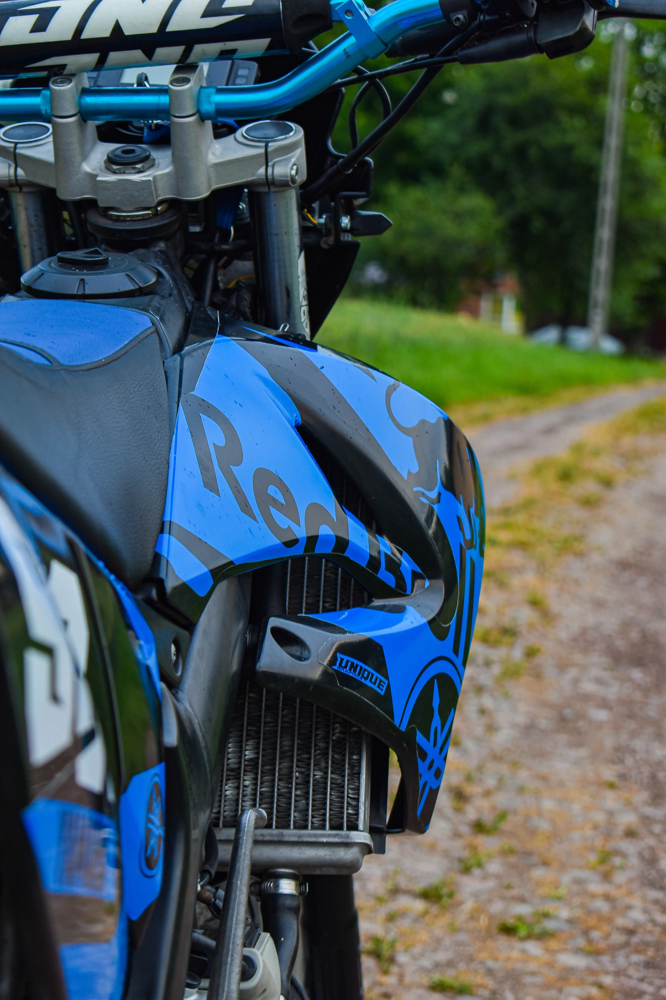
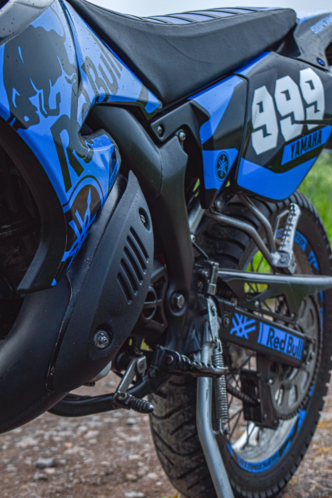
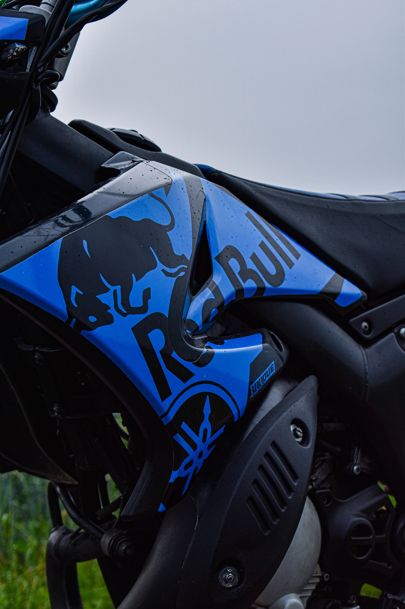

Rok 1982. Yamaha DT50 wjeżdża na scenę jako mały terenowy dwusuw, który miał zmienić bieg historii miejskiego enduro. Czterdzieści lat później, PROJECT 999 to hołd dla tej ikony — reinterpretacja klasyki w niebiesko-czarnej duszy.
Jednocylindrowy · Dwusuwowy · Bezkompromisowy

Silnik 2T o pojemności 49cm³. Chłodzony powietrzem. Prosty, brutalny, uczciwy. Każde uderzenie tłoka to obietnica. Każda nuta wydechu to poezja spalin. To nie tylko silnik — to charakter.

Rama rurowa, wzmocniona, gotowa na każdy teren. Zawieszenie długoskokowe, które połyka nierówności jak nic. Niebieski lakier łączy się z czarnym metalem — dwa światy, jedna maszyna.
Miasto · Las · Piach · Błoto

Kolor który definiuje. Głęboki niebieski Yamahy, przełamany matową czernią — jak nocne niebo nad autostradą. PROJECT 999 to nie tylko motocykl, to statement. To manifest wolności zapisany w metalu.

Nie chodzi o cyfry. Nie chodzi o osiągi. Chodzi o to, co czujesz gdy odpalasz silnik o świcie i wyjeżdżasz w pustą drogę. DT50 — mała maszyna z ogromną duszą. PROJECT 999 to twoja historia.
· ONE MACHINE · ONE STORY · ONE LEGEND ·